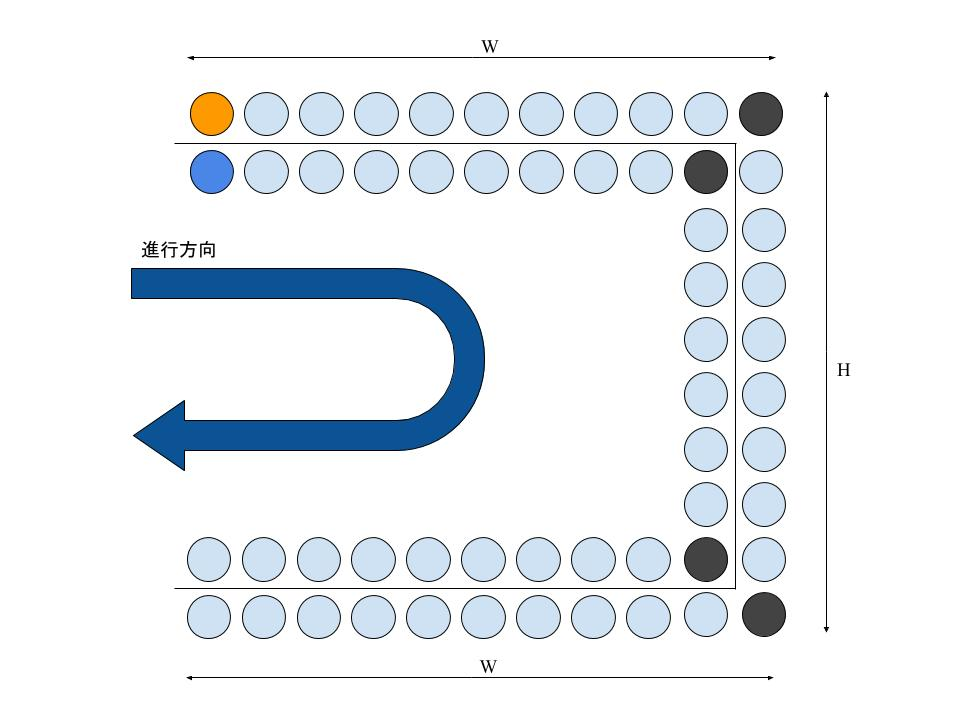

ウニクロ卯月さんと目黒凛さんはSEARIGHT LIVE FESの物販に来ている。物販列は二列で、下図のように横にW人、縦にH人並べる大きさでコの字の形をしている。列の先頭の人は買い物をした後列からはけ、同じ列の後ろの人々はそれぞれ一人分ずつ列を詰める。二人は最初に物販列の最後尾に隣同士で、それぞれ違う列に（下図オレンジと濃い青色の位置）並んでいる。二人はとても仲がいいため、常にできるだけ近くにいたい。しかし、人のはけ方は列によって違うため、違う列に並んでいる二人の位置は離れてしまう可能性がある。
あなたの仕事は、列のはけ方が与えられたとき、二人が隣同士になる回数を求めることである。
ただし、二人ともコの字の角にいる（上図の黒色の状態の）ときは、隣同士とは言わないものとする。また、並んだ直後は隣同士に並んでいるが、これは数えない。
入力は以下の形式で与えられる。
W H N p1 p2 ... pN
1行目には列の大きさについての情報が空白区切りで与えられ、Wはコの字の横に並べる外側の人数を、Hは縦に並べる外側の人数を表す。2行目には人が一人どちらかの列からはける回数Nが与えられる。3行目には列のはけ方についての情報p1...pNが空白区切りで与えられる。piには’0’か’1’が与えられ、’0’のとき、外側の人が一人はけることを、’1’のとき内側の人が一人はけることを表す。ただし、ウニクロ卯月さんまたは目黒凛さんが列から出ることはない。
二人が隣同士になる回数を一行に出力せよ。
11 11 5 0 0 0 0 0
0
11 11 5 0 0 1 1 1
1